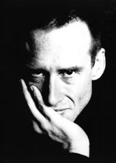
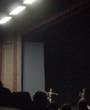

One Flat Thing, reproduced (2000)
BALLET FRANKFURT
The Room as it Was
Duo
(N.N.N.N.)
One Flat Thing, reproduced
Oct 5, 2003 / Brooklyn Academy of Music / New York City
Review by EDWARD LUNA
In the US, the dances created by William Forsythe and his Ballet Frankfurt are known primarily for their contorted, geometric, and formal qualities. This is contemporary European dance at its most obtuse and abstract; with harsh, minimalist lighting, electronic music scores, rail-thin dancers, and frequent use of text. Such experimentalism often receives a rather cool reception here, where dance audiences are more accustomed to the lyrical/musical style of Mark Morris, or the pastiched African-Americana of Bill T. Jones.
The Forsythian project, by contrast, is at once more ambitious and more modest than that of the latter choreographers. Where Mark Morris evokes a kind of baroque classicism, and Jones resonates with the sensibility of jazz, Forsythe draws from such heady sources as the deconstructivist architecture of Daniel Libeskind. At the same time, he celebrates the good old-fashioned balletic body, and claims not to be overturning the paradigm of that form, but rather simply going "through" it—"adjacent, or beside, or around" it. In some sense, then, Forsythe is the quintessential American pioneer in Europe: investing an old European tradition with a rock'n'roll sensibility.
In spite of this, the roots of his explorations largely bypass the traditions of American Modern Dance, as represented by the lineage of Martha Graham, Paul Taylor, José Limón, Merce Cunningham, and artists of the Judson Church era. Certainly, his work can be seen in a continuity with these artists, but in Forsythe we see a genuinely European aesthetic at work—influenced by the influence of the American Moderns, perhaps, but more in line with European traditions of deconstruction, Tanztheater, avant-garde art and music, and classical ballet. There is no trace of the archetypal psychodrama of Graham, for example, despite having sometimes drawn from similar mythological sources. There is also little of the lyricism of Taylor and Limón, despite an abiding concern for fluidity of movement. And while there is certainly a great deal of partnering and physical contact between the dancers, Forsythe's work betrays little influence of contact improvisation or release technique.
The closest Forsythe comes to the American tradition is Cunningham, who engages in a similar dialogue between the classical forms of ballet, chance operations, and modern music. However, where Cunningham absolutely decried narrative and musicality in favor of an aesthetic of arbitrariness, Forsythe is far more deliberate. Cunningham's "collaborators" worked separately and were only put together on opening night. Forsythe, while using a great deal of improvisation in his works, nevertheless shapes his work, making decisions with the help of his dancers. He also helps design sets and lighting and often works closely with Thom Willems, his musical collaborator. Forsythe is also less afraid to engage the audience with notions of "meaning." His works offer a kind of open-ended narrativity that lies somewhere between the "closed" meaning of story ballet and the radical randomness of Cunningham. In either case, Forsythe is arguably more appropriate—and more approachable—than either of those.

The rare appearance by Ballet Frankfurt at the Brooklyn Academy of Music in 2003 was a sold-out run, attended by the usual audience of well-dressed dance aficionados, but also by a whole new generation of moppy-haired hipsters eager to take in some of Forsythe's much-hyped work. Rather surprisingly, the program presented by the company was relatively straightforward dance characterized by a clarity and joy of movement. This is quite unlike some of the company's more recent work, which has made extensive use of text, pedestrian movement, extensive sets, and other theatrical elements not often seen in dance (such as the use of a cameraman who becomes part of the piece, as I witnessed in 2003's Decreation).
The opener, called The Room as it Was (2002) features four female and four male dancers. The dance, which is a loving exploration of balletic vocabulary, unfolds in a carefully crafted environment consisting of light-colored scrim that bounds a brightly lit rectangular area on all sides of the stage. The women, wearing point shoes, are the most clearly articulated, and Dana Casperson in particular is notable for using her feet in sculpted passé and attitude positions. The dancers go through various configurations, or "scenes," creating solos, duets, trios, and so on. Often, the remaining dancers leave the space during solos or duets, only to come back and join back in. This constant shifting of dancers in and out of the space appears informal, almost casual. In this, the piece shows some influence of improvisation, of a spatial kind somewhat unlike the more internal style that appears to dominate in the US. The dancers also use their breath and body slaps as cues, creating a rhythm of breathing and movement which is interesting for its constant inventiveness.
The piece eventually shifts into a completely new setup. The back "wall" of the bounded rectangle is slowly raised to reveal two of the dancers lingering in an embrace, while the lighting shifts from dry and white to moody and dark, and a piece of ambient electronic music fades in. Then, abruptly, the piece ends. It is as if, by ending the piece in the middle of a thought, Forsythe wants the audience to continue it on their own, in their imaginations. Or, perhaps it is a reminder of the ephemerality of time; a reminder that we cannot relive past experiences, as hinted by the title.

Duo (1996)
Duo (1996), featuring two female dancers in socks, black briefs and long-sleeved, see-through tops, is the most balletic of the program. With the curtain down, the dancers have only the front of the stage to perform. Even with the orchestra pit converted to add stage space, the danceable area is still quite shallow. The most striking visual aspect of the piece is its brutally simple lighting. A line of specially installed fluorescent lights illuminate the front of the stage and the front of the house from overhead, lending the work a very informal, vulnerable feeling. As the dancers are exposed, so are we, the audience, exposed.
The movement itself consists of highly balletic motifs done mostly in unison, set to a simple piano tune reminiscent of Satie's turn-of-the-century melancholia. The rhythm of the piece is modulated by slight shifts in this unison, and sudden collapses to the ground. On the ground, the movements retain their balletic clarity and length, but also become more vigorous and animal-like. The dancers recover from these collapses by coming back up, regaining their composure, and starting anew, on passé relevé. Shifting and undulating with the subtle comings and goings of the music, which often fades to near nothingness, the piece again ends abruptly.
(N.N.N.N.) (2002) is for four male dancers. This time the movement is more athletic, pushing the dancers to various extremes of speed, strength, and position. Gestures and physical contact abound. One particularly memorable image is of the dancers holding their heads in each others' hands and using that as a point of departure for more tangled positions. The lighting is minimal, as in the other pieces, which foregrounds the movement. By the end of the piece, so much has happened that the audience remains almost as exhausted as the dancers.
The most striking piece is the closer, entitled One Flat Thing, reproduced (2000). It begins with the harrowing image of 14 dancers shoving 20 large metal tables towards the audience. The screeching, lumbering, mass of metal stops on a dime, and becomes the grid-like set through which the dance is elaborated.
The dancers use the tables in every imaginable way. They mostly dance in the "channels" between the tables, in front of them, behind them, and occasionally under them. The dancers alternate between quick negotiations between the tables, to occasional group formations that spill onto the tabletops, before being pulled back down. The tables are slapped, shifted, and in one case even used like a turtle shell, raised on the back of a dancer hidden underneath. Nearly in the dark along the bare, back stage wall, other dancers simply wait to reenter the main space. Meanwhile, the music is the sonic equivalent of metal, consisting of churning, noisy, "industrial" sounds that build and are seemingly disconnected from the movement onstage.
All of this cacophony does not take away from the subtle interactions between the dancers, who sometimes appear to be cautiously waiting for their cues, at other times, indulging in a guilty solo on top of a table.
In order to take in all of these details, the piece requires a certain "fuzzy vision." What becomes immediately noticeable in that state is how carefully the piece has been constrcuted: seemingly disconnected movements flutter through the space, dancers clump together and dissipate, clear lines are drawn out and then collapsed. The piece ends with the dancers collecting the tables far upstage, and again pushing them down towards the audience, menacingly. As with most of the pieces of this program, One Flat Thing simply ends there, with the threat of whatever may be "next" hanging in our throats.
SOURCES
Forsythe, William. Interview by John Tusa on BBC Radio 3. 2 Feb 2003. Transcribed by Ballet.co. Dec. 2003 <http://www.ballet.co.uk/magazines/yr_03/feb03/interview_bbc_forsythe.htm>.
Jowitt, Deborah. "How Many Ways To Twist It?" Village Voice. October 84, 2003. Dec. 2003 <http://www.villagevoice.com/issues/0341/jowitt.php>.
Kiethley, Karinne. "Very good at using it." Review for Offoffoff.com. Oct. 7, 2003. Dec. 2003 <http://www.offoffoff.com/dance/2003/ballettfrankfurt.php>.
Kisselgoff, Anna. "Loud Tables, but Not a Restaurant." The New York Times. Oct. 2, 2003. Nov. 2003 <http://www.nytimes.com/2003/10/02/arts/dance/02WAVE.html>.